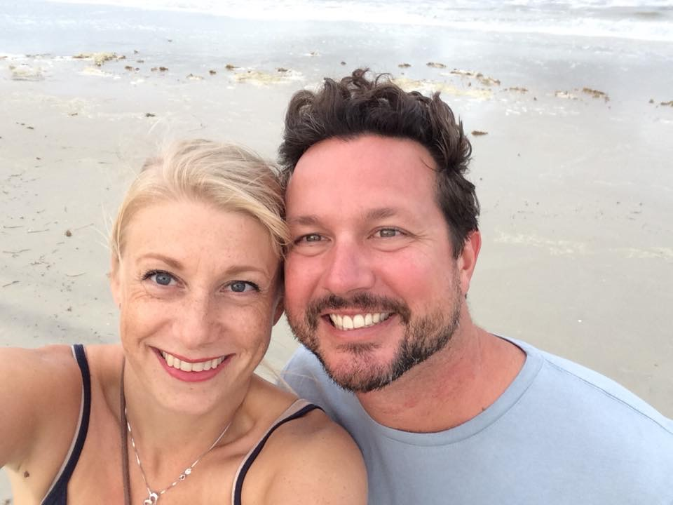

About Us
Frankie Alice’s Beachside Boutique is just a little store next to the beach,
but we sell through tons of inventory each year. Virtually nothing stays the
same in the store as it changes from week to week, sometimes twice per week,
and items continue to move around while being presented in different takes on
fashion. Frankie Alice’s is the “brainchild” of Ingrid and Michael, the couple
met over a decade ago while on different paths in life. What brought them together
has kept them working together towards the common goal of opening their very own
business that the two of them could work in and grow. They are proud to
announce the launch of their newest addition to Frankie Alice’s Beachside
Boutique, an online store made simply for shopping those items you’ve come
to know and love!
